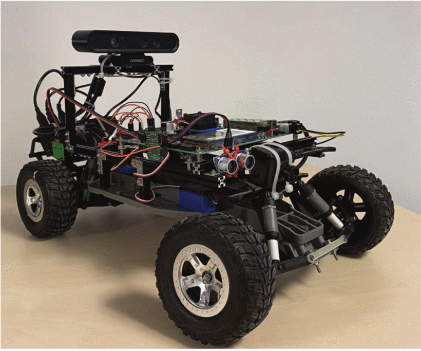

AutonomROS: A ReconROS-based Autonomous Driving Unit

Venue. IRC (2023)
Abstract. Autonomous driving has become an important research area in recent years, and the corresponding system creates an enormous demand for computations. Heterogeneous computing platforms such as systems-on-chip that combine CPUs with reprogrammable hardware offer both computational performance and flexibility and are thus interesting targets for autonomous driving architectures. The de-facto software architecture standard in robotics, including autonomous driving systems, is ROS 2. ReconROS is a framework for creating robotics applications that extends ROS 2 with the possibility of mapping compute-intense functions to hardware. This paper presents AutonomROS, an autonomous driving unit based on the ReconROS framework. AutonomROS serves as a blueprint for a larger robotics application developed with ReconROS and demonstrates its suitability and extendability. The application integrates the ROS 2 package Navigation 2 with custom-developed software and hardware-accelerated functions for point cloud generation, obstacle detection, and lane detection. In addition, we detail a new communication middleware for shared memory communication between software and hardware functions. We evaluate AutonomROS and show the advantage of hardware acceleration and the new communication middleware for improving turnaround times, achievable frame rates, and, most importantly, reducing CPU load.
Link to this page: